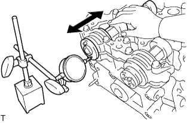

ГОЛОВКА БЛОКА ЦИЛИНДРОВ > ПРОВЕРКА |
| 1. ПРОВЕРЬТЕ ГОЛОВКУ БЛОКА ЦИЛИНДРОВ В СБОРЕ |
 |
С помощью прецизионной поверочной линейки и щупа измерьте величину коробления поверхностей, контактирующих с блоком цилиндров и коллекторами.
| *a | С нижний стороны головки блока цилиндров |
| *b | Сторона впускного коллектора |
| *c | Со стороны выпускного коллектора |
Методом цветной дефектоскопии проверьте впускные каналы, выпускные каналы и поверхность головки блока цилиндров на наличие трещин.
При обнаружении трещин замените головку блока цилиндров.
| 2. ПРОВЕРЬТЕ ВНУТРЕННЮЮ ПРУЖИНУ СЖАТИЯ |
Штангенциркулем измерьте общую длину внутренней компрессионной пружины в свободном состоянии.
С помощью стального уголка измерьте отклонение от перпендикулярности внутренней пружины сжатия.
| *1 | Отклонение |
| 3. ПРОВЕРЬТЕ ВПУСКНОЙ КЛАПАН |
С помощью штангенциркуля измерьте полную длину клапана.
Микрометром измерьте диаметр штока клапана.
Штангенциркулем измерьте расстояние от рабочей фаски до края тарелки клапана.
| *1 | Предельно допустимая толщина: |
| 4. ПРОВЕРЬТЕ ВЫПУСКНОЙ КЛАПАН |
С помощью штангенциркуля измерьте полную длину клапана.
Микрометром измерьте диаметр штока клапана.
Штангенциркулем измерьте расстояние от рабочей фаски до края тарелки клапана.
| *1 | Предельно допустимая толщина: |
| 5. ПРОВЕРЬТЕ СЕДЛО КЛАПАНА |
Нанесите тонкий слой берлинской лазури на торец клапана.
Слегка вдавите клапан в седло клапана.
Проверьте торец клапана и седло клапана в порядке, описанном ниже.
Убедитесь, что берлинская лазурь распределена по всей поверхности клапана. В противном случае замените клапан.
Если берлинская лазурь распределена по всему седлу клапана, направляющая и седло клапана концентричны. В противном следует повторно прошлифовать поверхность седла клапана.
Убедитесь, что седло клапана сопрягается со средней частью торца клапана, а ширина зоны контакта равна 1,1–1,4 мм (0,0433–0,0551 дюйма).
| *1 | Ширина |
| 6. ПРОВЕРЬТЕ ОСЕВОЙ ЗАЗОР РАСПРЕДВАЛА |
|  |
Установите распредвалы (Нажмите здесь).
Смещая распредвал вперед и назад, индикатором часового типа измерьте осевой зазор.
| 7. ПРОВЕРЬТЕ МАСЛЯНЫЙ ЗАЗОР РАСПРЕДВАЛА |
Очистите крышки подшипника и шейки распредвала.
Установите распредвалы в головку блока цилиндров.
 |
Поместите проволочки для измерения зазоров в осевом направлении на все шейки распределительного вала.
| *1 | Сминаемый пластичный калибр Plastigage |
Установите крышки подшипников (Нажмите здесь).
Снимите крышки подшипников (Нажмите здесь).
 |
Измерьте ширину сминаемого пластичного калибра Plastigage в самой широкой точке.
| Параметр / Устройство | Заданные условия |
| Для шейки №1 | 0,035 - 0,072 мм (0,00138 - 0,00283 дюйма) |
| Для остальных шеек | 0,025 - 0,062 мм (0,000984 - 0,00244 дюйма) |
| *1 | Сминаемый пластичный калибр Plastigage |
Полностью удалите сминаемый пластичный калибр (Plastigage).
| 8. ПРОВЕРЬТЕ МАСЛЯНЫЙ ЗАЗОР НАПРАВЛЯЮЩЕЙ ВТУЛКИ КЛАПАНА |
С помощью индикатора часового типа для отверстий измерьте внутренний диаметр направляющей втулки.
Вычтите измеренное значение диаметра штока клапана из измеренного значения внутреннего диаметра направляющей втулки.
| Параметр / Устройство | Заданные условия |
| На впуске | 0,025 - 0,060 мм (0,000984 - 0,00236 дюйма) |
| На выпуске | 0,030 - 0,065 мм (0,00118 - 0,00256 дюйма) |
| Параметр / Устройство | Заданные условия |
| На впуске | 0,08 мм (0,00315 дюйма) |
| На выпуске | 0,10 мм (0,00397 дюйма) |